MILIASTRA WORKSHOP / EPISODE 03Save, Export and Import
Export and separately restore a whole save, then transfer one Stone Road entity into an empty sandbox.
Keep the source card available. Distinguish the editing save, the external file and the imported card. Use .gil for the whole-save copy shown here, and .gia for the selected-entity asset. Read the current-save and undo/redo warning before asset transfer. Check what you imported instead of relying only on a thumbnail.
00:3501. Save before leaving the editor
Start in the finished woodland. Open the System Menu and Quick Save. Wait for the saved confirmation before leaving. Quick Save stores the current editing save. It doesn't give you a separate file in a folder on your computer. For that, we need the export operation on the save page.
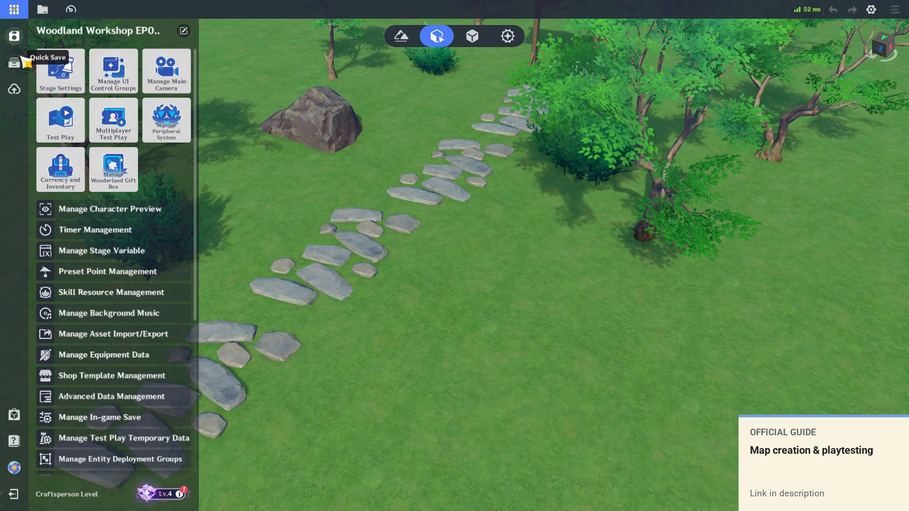
00:5102. Find the save page
From the normal game, open the Paimon Menu and the My Miliastra button to reach Local Save. From an editing project, use its menu to return to the save page. The official course uses the longer name My Miliastra Wonderland; the current English button shown in this recording is My Miliastra. Identify the intended project card before choosing a command.
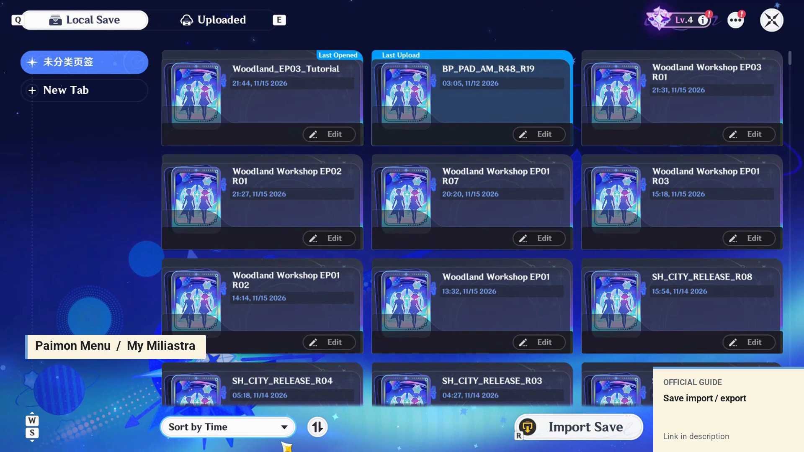
01:0903. Make a separate lesson copy
Open the card's menu and choose Copy Save. Give the copy a useful lesson name. Here, it's Woodland Workshop, episode three. The earlier lesson remains on its own card. A separate copy gives us somewhere to practise without changing the version we just finished. Check the new card before continuing.
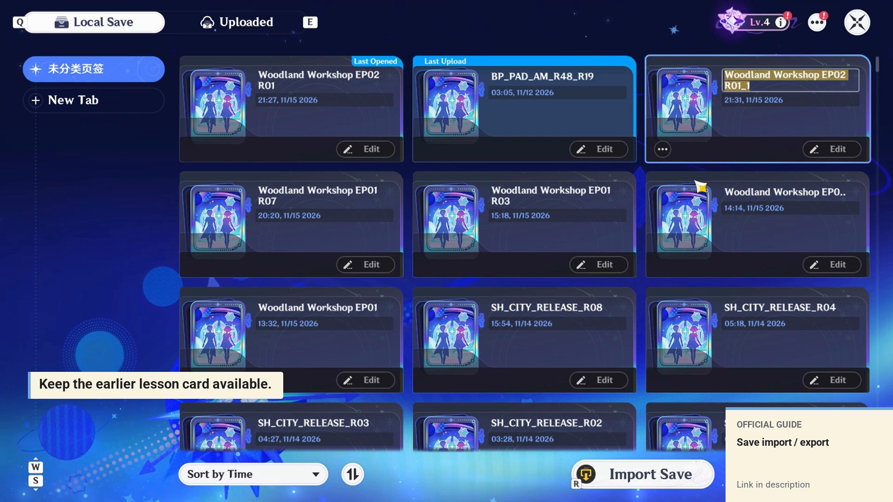
01:3604. Export the whole save
On Local Save, open the lesson card's menu → Export Save File. Choose your own folder and recognisable filename, retain the .gil extension, then save. Only filename/type crops of the actual native dialog are shown in this video; the folder path and sidebar are outside those reference views. The card title and exported filename are independent.
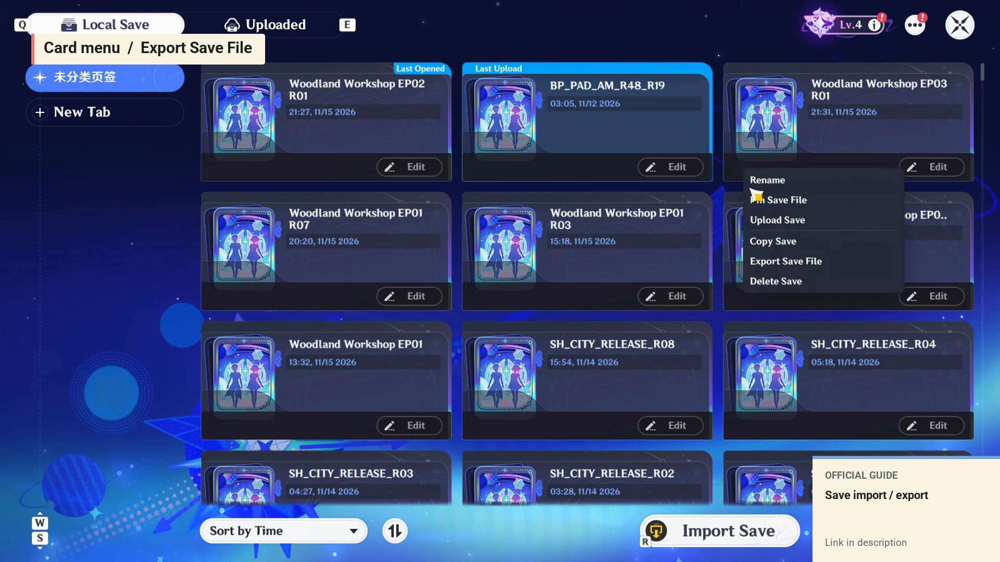
01:5705. The card name and file name
The name on the editor card and the name of the exported file are separate. Changing one doesn't rename the other. I use Woodland, episode three, Tutorial for this export. You can use your own name. Keep the file extension and choose a folder you'll be able to find again.
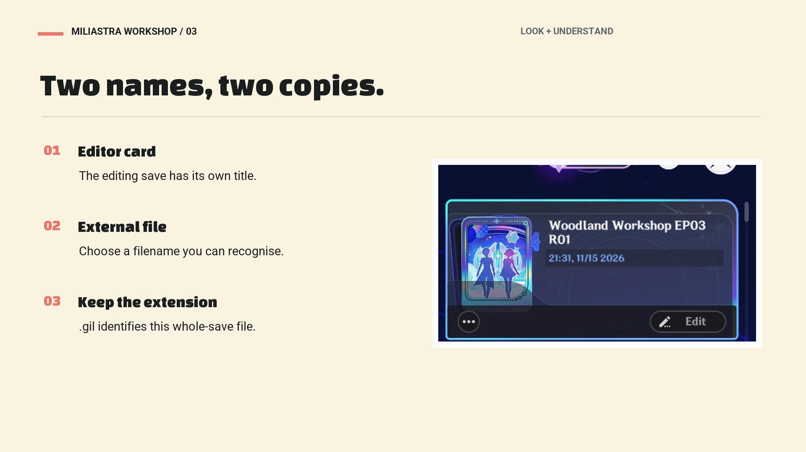
02:1306. What the whole-save file represents
Think of this file as a copy of this editing project at the moment it was exported. It isn't a live connection to the card. If you change the woodland later, export again when you want an updated external copy. Keep an earlier file separately if you want to preserve that earlier state.
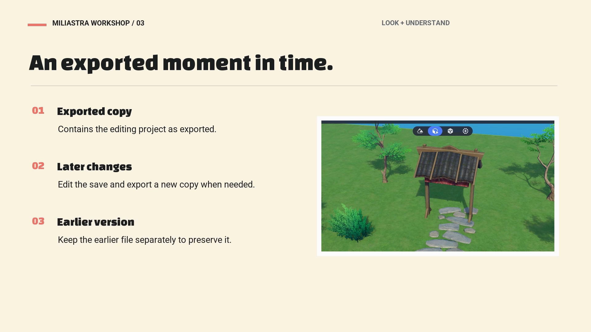
02:2907. Import it as a separate save
Choose Import Save at the bottom of Local Save. Select your exported .gil and open it. Wait for a separate card, keep the source card, and open the imported copy. The button reference was re-recorded using the same .gil, because an earlier take was excluded. Importing again may add a suffix; the extra demonstration card was renamed Woodland EP03 Import Demo2. Object and walking checks in the lesson use the original restored card Woodland_EP03_Tutorial.
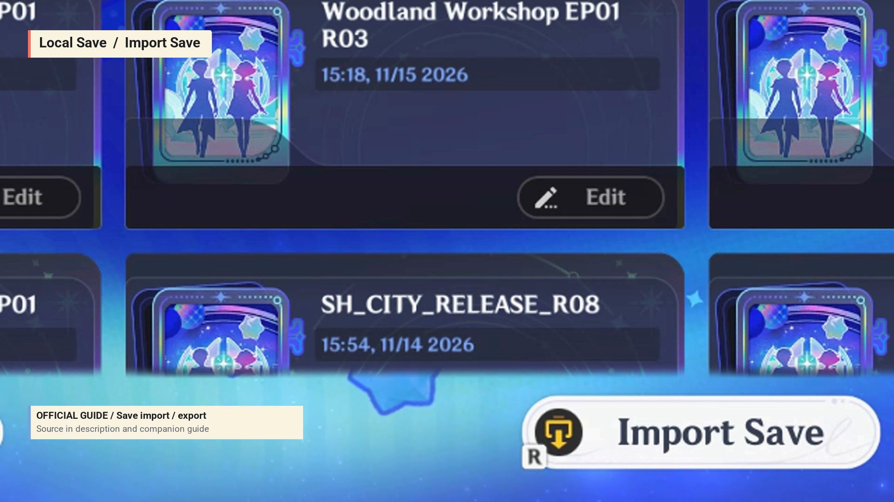
02:4708. Check which card you opened
Our imported card is called Woodland, episode three, Tutorial. Before editing anything, check its title and recognise the scene. A familiar thumbnail alone is easy to misread when several copies look the same. Keep track of the source card, the external file, and the imported card as three separate things.
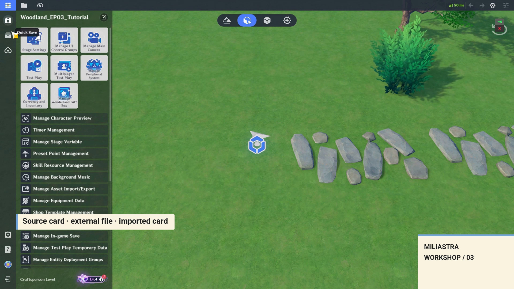
03:0609. Check representative objects
Select a Stone Road group and read its name and Transform values. Then look at the tree, rock, and Rain Pavilion. We're checking that different parts of the arrangement came across, rather than assuming that one visible object proves the entire save is correct. Your own scene may use different models or coordinates.
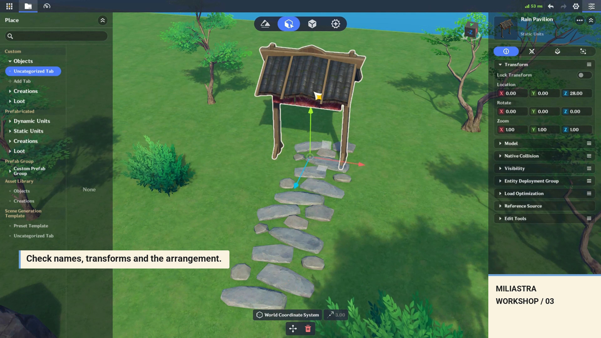
03:3110. Check the imported copy in play
Quick Save the imported version and start a private Test Play. Wait for the character to appear. Look towards the pavilion, walk a short distance along the central stones, and release the movement key. In this check, the route is visible and the character moves along the ground. Test your own important interactions when your project has them.
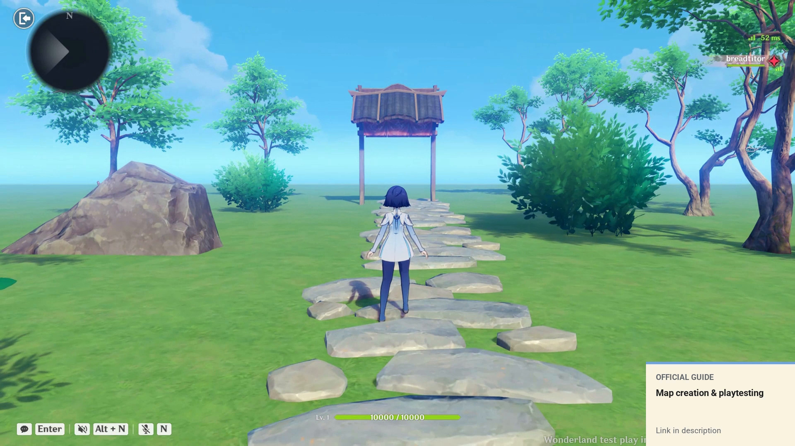
04:0611. Return after the check
Leave the private test, return to the imported editing save, and save any changes. This short test checks the restored scene and a small part of its walking route. It doesn't check every possible action. Later, when the challenge has coins and a timer, those systems will need their own checks after import.
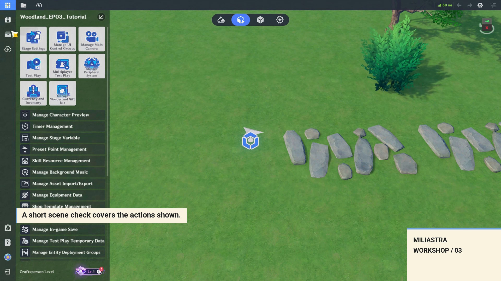
04:4713. Export one selected entity
Select one Stone Road in the restored scene, confirm its name, then right-click → Export Entity. Choose a recognisable filename and retain .gia. One Stone Road model contains several visible stones but is one selected entity. This file is the single-entity example, rather than the whole woodland.
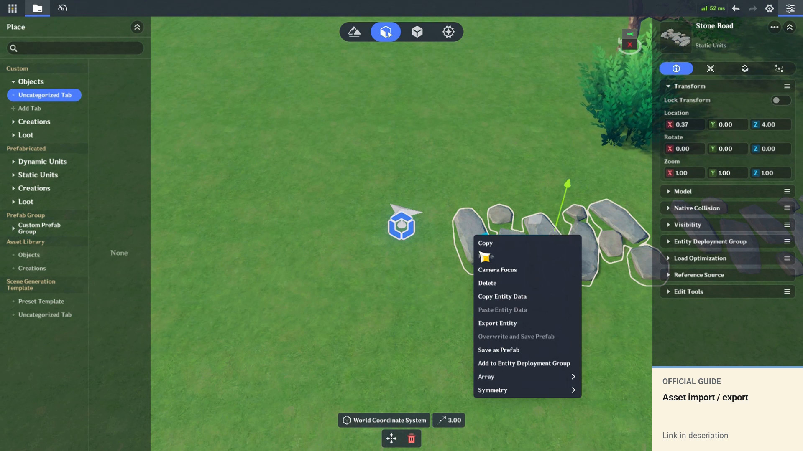
05:1314. Keep related assets together
The official guide also explains that an exported entity can carry its associated prefab and mounted node graphs. When several assets refer to each other, exporting the related content together helps preserve their relationships. Our scenery example is deliberately small. We haven't built or checked a package of linked gameplay systems in this lesson.
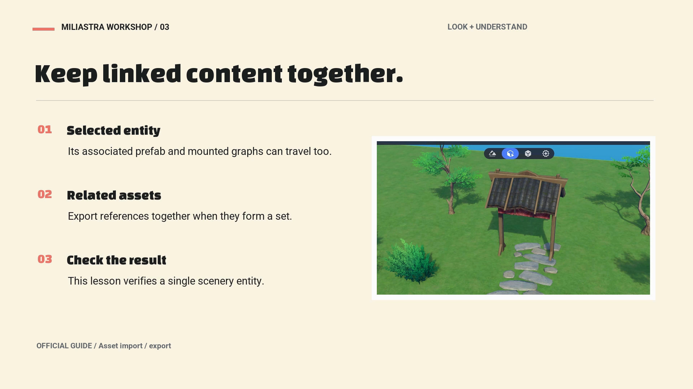
05:3415. Use an empty sandbox for the example
Create a separate blank Beyond Mode lesson save for the asset demonstration. The early creation footage shows its default name; it is subsequently named Woodland Workshop EP03 Asset Sandbox and saved. Keep the restored woodland available. The empty scene makes it easy to see that the .gia adds one Stone Road group, with none of the woodland's trees or pavilion.
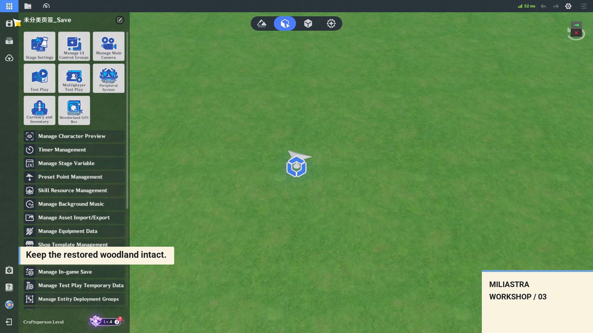
05:5416. Load the external asset
In a separate blank Beyond Mode save, open System Menu → Manage Asset Import/Export → Import and Transfer → Load External Assets. Follow the native load prompt. The actual tool is shown as a labelled reference so its lower-right button stays visible. The Stone Road appears in the asset list; loading the file is separate from transferring its selected content into the current save.
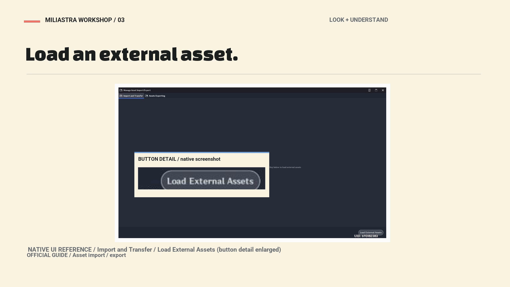
06:1317. Read the transfer confirmation
Select the Stone Road in the loaded list and choose Transfer Selected Assets. Read the native confirmation. This selected object entity enters the current scene, and the transfer clears that save's undo/redo history. Confirm only after identifying the sandbox and selection. In this lesson the transfer is made into the separate empty Asset Sandbox.
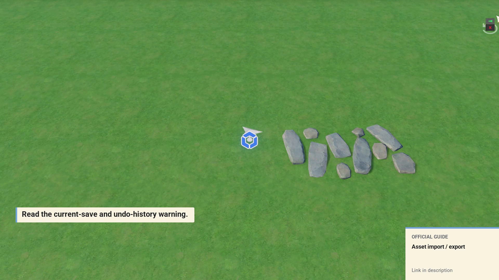
06:3618. Check what actually arrived
After the transfer, one Stone Road group appears in the empty scene. Select it and read back its name and Transform. There are several individual stones in the model, but this selection is one entity. The woodland's trees and pavilion aren't here. That visible difference tells us what this particular asset file contained.
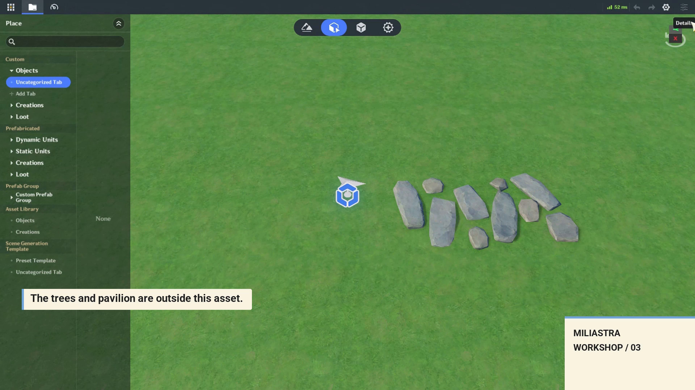
06:5619. Save the reusable example
Quick Save the sandbox and wait for the confirmation. Keep the asset file as well if you want to reuse it again. The current sandbox and the external asset are separate copies. Editing the placed stones here won't automatically update the file you exported earlier.
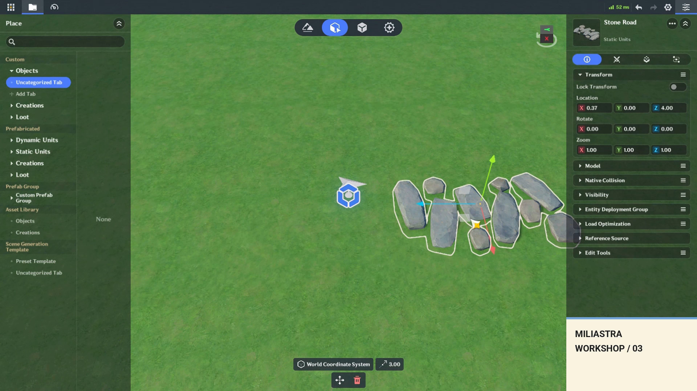
07:1120. Try the recovery check yourself
For your own check, find the whole-save file and import it separately. Open the new card, recognise the scene, inspect a few objects, and try the important route. Then identify the single-entity asset and explain what it should add to an empty save. Being able to find and verify these copies is the useful skill.
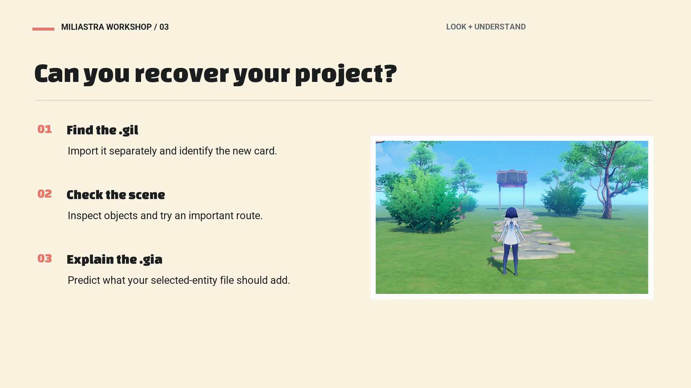
07:3021. Keep the files easy to recognise
Keep your lesson saves and external files clearly named as the series grows. You don't need to copy my exact folder names. You do need to know which file is the whole project, which is the reusable asset, and which version you tested. The companion guide includes the menu paths and the official references.
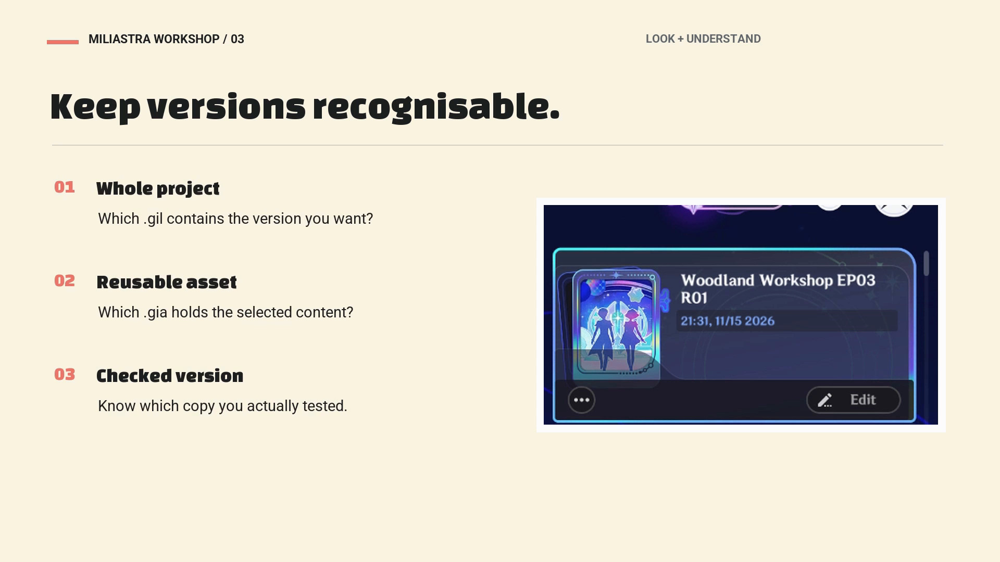
Official references
These explanations use our own words. Native interface labels are shown in the images. A short test covers the actions shown; test the important systems in your own version after changes.